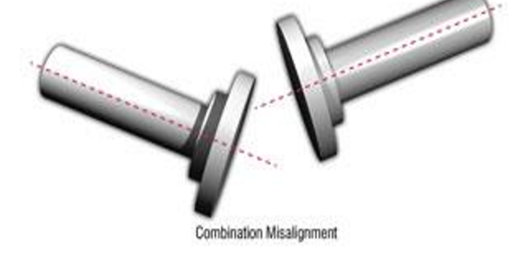
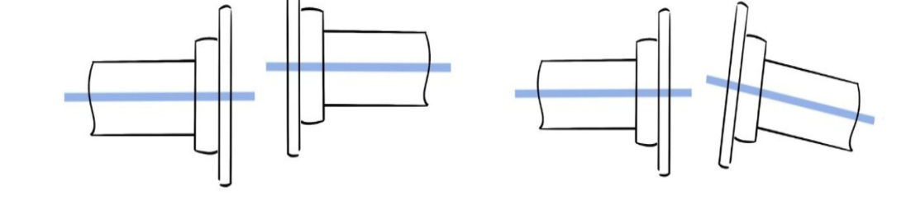

Unit 1: Electrical Safety
Safety for Domestic Electrical Appliances:
- Electrical appliances are vital in households but can pose risks such as electric shocks, fires, or damage if improperly handled. Following safety practices is essential to prevent accidents.
Do’s:
- Read the User Manual: Always follow the manufacturer’s operation, maintenance, and safety precautions instructions.
- Use Proper Wiring: Ensure appliances are connezlcted to properly grounded outlets and correctly wired circuits.
- Check for Damage: Regularly inspect cords, plugs, and outlets for signs of wear, damage, or fraying.
- Turn Off After Use: Switch off and unplug appliances when not in use to prevent overheating, fires, or accidental activation.
- Install Circuit Protection: Use Residual Current Devices (RCDs) or circuit breakers to protect against electrical shocks and overcurrent.
- Dry Hands and Surroundings: Always operate electrical appliances with dry hands and ensure the area around them is dry to prevent electric shocks.
- Childproof Your Home: To avoid accidents, use outlet covers and keep appliances out of children's reach.
- Ensure Proper Grounding: Check grounding connections for continuity and safety.
- Check Connections: Before use, ensure electrical connections are secure and tight to avoid overheating or loose connections.
- Wear Protective Gear: Wear rubber gloves, shoes, and helmets when operating on difficult or exposed lines.
- Use Approved Extension Cords: Only use extension cords that are rated for the appliance and for temporary use.
- Acknowledge Hazards: Immediately disconnect and take necessary actions if you notice sparks, smoke, excessive heat, or other warning signs.
- Keep Tools and Equipment in Good Condition: Ensure all electrical tools and appliances are BIS certified and in working order.
- Maintain Cleanliness: Keep tools and appliances free of dust, moisture, or grease that could cause short circuits or malfunctions.
- Inspect Switches and Disconnecting Devices: Regularly check switches, MCBs, and PLC systems to ensure proper ratings and functionality.
Don’ts:
- Don’t Press Unknown Switches: Do not press switches unless you are sure of their function and safety.
- Don’t Operate or Tamper with Electrical Equipment: Never modify electrical gear or wiring unless you're qualified.
- Don’t Work on Live Circuits: Only authorized personnel should work on live circuits; follow proper procedures.
- Don’t Disconnect Grounding Connections: Always maintain the earth connection to prevent electrical shocks.
- Don’t Hesitate to Close Switches: Always ensure switches are properly closed without hesitation to avoid dangerous arcing.
- Don’t Touch Electrical Equipment in Wet Conditions: Never touch electrical circuits with wet hands or when standing on wet surfaces.
- Don’t Wear Loose Clothing or Jewellery: Avoid wearing metal rings, loose clothing, or jewelry when working near live electrical lines.
- Don’t Work at Heights Without Safety Gear: Always use a secure ladder, safety belt, and helmet when working in elevated positions.
- Don’t Smoke Near Batteries: Keep smoking away from battery rooms as it could lead to fire hazards.
- Don’t Overload Electrical Equipment: Avoid overloading appliances, circuits, or motors, as it can lead to overheating or fire.
- Don’t Use Electrical Devices in Wet Environments: Never use electrical equipment in high humidity or wet conditions unless it is rated for such use.
Industrial Electrical Safety:
- In industrial environments like power stations or substations, the risk associated with high-voltage systems necessitates extra precautions. Adhering to strict safety protocols during operation, control, and maintenance ensures a safer workplace.
During Operation:
- Wear PPE: Always use appropriate personal protective equipment (PPE), such as insulated gloves, face shields, and safety shoes.
- Follow Lockout/Tagout (LOTO): Properly shut down and de-energize equipment before servicing or maintenance to avoid accidental startup.
- Use Insulated Tools: Handle live equipment with insulated tools rated for the voltage level.
- Avoid Direct Contact: To reduce the risk of electric shock, maintain a safe distance from exposed live parts.
During Control:
- Inspect Equipment Regularly: To ensure safe operation, regularly check equipment for signs of wear, overheating, or loose connections.
- Label Circuits and Controls: Clearly label all circuits and controls for easy identification and to prevent accidental operation.
- Prevent Unauthorized Access: Restrict access to electrical control rooms to trained personnel only to ensure proper handling of critical systems.
During Maintenance:
- De-Energize Equipment: Isolate electrical systems completely before beginning maintenance work.
- Test for Voltage: Use voltage testers to confirm that circuits are de-energized before starting work.
- Maintain a Clean Workspace: Keep the maintenance area organized and free of hazards like tripping or accidental contact with tools and equipment.
Additional Safety Measures in Industrial Settings:
- Safety Notices: Place clear safety notices on all high-voltage equipment enclosures.
- Lock Access to Hazardous Areas: Ensure that gates and doors to high-risk areas like switchyards and switchgear rooms are locked and accessible only by authorized personnel with permits.
- Use the Two-Person Rule for Long Materials: When carrying long materials such as pipes or ladders, ensure two people handle them to avoid accidental contact with live parts.
- Guard Work Areas: Keep areas where high-voltage work is being conducted guarded to prevent accidental contact by untrained personnel.
- Test Rubber Gloves: Regularly test the rubber gloves used by operators for electrical work to ensure they provide adequate protection.
1.3. Rescue Procedures for Electric Shock:
Immediate Action:
- Isolate the Victim: Quickly remove the person from contact with the electrical source, either by turning off the power or using a non-conductive object to move them safely.
Cut Power:
- Switch Off: Immediately switch off the nearest circuit breaker or disconnect the switch to stop the electrical flow.
Start Artificial Respiration:
- CPR Initiation: If the person is not breathing, begin CPR immediately, performing chest compressions and mouth-to-mouth breathing if necessary.
Stop Bleeding:
- Control Bleeding: If there is visible bleeding, use a clean cloth or bandage to apply pressure to stop the blood flow.
Position the Person:
- Lower the Head: Lower the person’s head slightly to ensure better blood circulation to the brain.
Ensure Proper Ventilation and Calm:
- Clear the Area: Keep the area clear of unnecessary onlookers and provide good ventilation. Stay calm to prevent further stress or confusion.
Avoid Giving Drinks:
- Do Not Offer Drinks: Avoid giving the person anything to drink, especially if they are unconscious or semi-conscious.
Call for Emergency Assistance:
- Seek Professional Help: Call a doctor or emergency services immediately, and provide them with the situation details.
Maintain Calm:
- Stay Calm: Keep the environment calm and avoid unnecessary panic. Focus on the task and reassure the injured person (if conscious).
Methods of Providing CPR (Artificial Respiration)
Chest Compressions:
- Hand Placement: Place the heel of one hand in the center of the chest, just below the sternum. Place the other hand on top of the first and interlace the fingers.
- Compressions: Push down hard and fast at a rate of 100–120 compressions per minute. Ensure that each compression is about 2 inches (5 cm) deep to circulate blood effectively.
Rescue Breaths:
- Open the Airway: Tilt the person's head back slightly and lift the chin to open the airway. Pinch the nose shut to prevent air from escaping.
- Give Two Breaths: Give two slow, deep breaths into the person’s mouth, ensuring the chest rises with each breath. Be sure the air enters the lungs, not just the stomach.
- Alternating CPR: Continue alternating between 30 chest compressions and 2 rescue breaths (30:2 ratio).
Continue Until Help Arrives:
- Continue performing CPR until the person starts to breathe on their own, or emergency medical help arrives.
Accepted Artificial Respiration Methods
Schafer Pressure Method:
This technique involves applying rhythmic pressure to the chest to help restore breathing by mimicking the natural chest movement. It's designed to create a pressure change that stimulates lung expansion.
Silvester Method (Arm Lift, Chest Pressure Method):
- The person’s arms are lifted over their head and then pulled downward to help expand the chest. Pressure is applied to the chest at intervals to encourage air movement.
Nielson Arm Lift-Back Pressure Method:
- This method involves lifting the person's arms to open the chest cavity, followed by applying pressure to the back to help expel air from the lungs.
Mouth-to-Mouth Method:
- This traditional method involves breathing directly into the person’s mouth to provide oxygen to the lungs. It’s commonly used when other methods are unavailable or ineffective.
Duration and Transition to Natural Breathing:
- CPR Duration: For most cases, CPR should continue for 12 to 15 minutes or until signs of natural breathing are evident.
- Synchronized Breathing: Once the person begins to breathe independently, synchronize artificial respiration with natural breathing, matching the rhythm and depth until the crisis is completely resolved.
Fire Safety:
Types of Fire:
| Fire Class | Type of Fire | Extinguisher Types |
|---|---|---|
| Class A | Ordinary combustibles (wood, paper, cloth) | Water, Foam, Powder, Wet Chemical |
| Class B | Flammable liquids (petrol, diesel, grease) | Foam, Powder, CO2 |
| Class C | Flammable gases (propane, butane) | Powder |
| Class D | Combustible metals (magnesium, sodium) | L2 Powder |
| Class E | Electrical fires (short circuits, faulty wiring) | Powder (under 1000V), CO2 |
| Class F | Cooking oils and fats | MultiCHEM, Water Mist, Wet Chemical |
Fire Detection Alarm System Components:
Initiating Devices:
- Smoke Detectors: Detect smoke, triggering alarms. Types: ionization (fast fires) and photoelectric (smoldering fires).
- Heat Detectors: Triggered by temperature rises, slower than smoke detectors.
- Manual Call Points: Manual activation by individuals to alert others of a fire.
- Flame Detectors: Detect UV/IR radiation from flames, used in high-risk areas.
Alarm Indicating Appliances:
- Audible Alarms: Sirens, horns, etc., to alert occupants.
- Visible Alarms: Flashing lights/strobes for better visibility, especially for the hearing-impaired.
Fire Alarm Control Panel:
- A central hub for monitoring and controlling the system. Receives signals from detectors and triggers alarms.
Power Supplies:
- Primary Power Supply: Powers the system under normal conditions (commercial power).
- Secondary Power Supply (Backup): Provides power during primary power failure (e.g., batteries).
Fire-Fighting Equipment:
Fire Extinguishers:
- Designed for different fire scenarios, filled with powder, water additive, foam, or CO2.
- Must be chosen based on the type of fire (e.g., electrical, liquid, or general combustibles).
- Should be checked monthly and fixed to the wall for easy access.
Fire Hoses:
- Used for large fires, delivering a powerful stream of water.
- Different nozzles can be attached to handle various fire types.
- Typically operated by fire brigades.
Fire Buckets:
- Simple equipment, usually filled with water, flame-suppressing powder, or sand.
- Often made of metal or plastic, marked with "Fire."
- Effective for small, localized fires.
Fire Blankets:
- Used to smother small fires, especially in kitchens or workplaces.
- Smaller blankets (e.g., 1.2m x 1.2m) are ideal for restaurant or workshop kitchens.
- Must be easily accessible for quick use.
Safety and Electrical Fire Precautions:
- Proper Storage/Handling: Store combustibles safely and ensure gas cylinders are stored according to safety regulations.
- Welding and Smoking: Follow safe welding practices and avoid smoking near electrical equipment.
- Temperature & Ventilation: Control temperature and ensure proper ventilation to prevent overheating.
- Maintenance: Regularly inspect the wiring, electrical insulators, and equipment; address faults promptly.
- Avoid Overloading: Do not overload circuits or equipment and use proper fuses/circuit breakers.
- Protection Schemes: Install protection devices for overvoltage, overcurrent, and temperature rise.
- Proper Earthing: Ensure all electrical equipment is correctly earthed.
- Scrap Disposal: Dispose of scrap and waste materials immediately to avoid fire hazards.
- Routine Inspections: Schedule regular safety inspections to detect potential hazards.
- Fire Extinguishers: Ensure fire extinguishers are easily accessible and appropriate for each fire class.
- Safe Flammable Storage: Store flammable liquids and materials safely away from ignition sources.
- Fire Causes: Negligence, poor maintenance, outdated equipment.
Unit 2: Installation and Erection
Foundations for Electrical Machinery:
- Proper foundations are crucial for ensuring the stability and efficiency of electrical machinery. The requirements vary for static and rotating machinery.
Requirements for Static Machinery:
- Load-Bearing Capacity: The foundation must support the weight of the machinery and any dynamic forces it generates.
- Vibration Dampening: Static machinery like transformers can generate minimal vibrations. The foundation must be designed to absorb and dampen these vibrations.
- Material: To ensure longevity, the foundation should be constructed with durable materials like concrete or reinforced concrete.
- Level Surface: A flat and level foundation is critical to avoid tilting or uneven stress on the machinery.
- Moisture Resistance: The foundation must be resistant to moisture to avoid degradation over time.
- Requirements for Rotating Machinery:
- Dynamic Stability: Rotating machinery, like motors or generators, creates dynamic forces. The foundation must be designed to handle vibrations and rotational forces without destabilizing.
- Anti-Vibration Measures: Use anti-vibration pads or mounts to reduce wear and ensure smooth operation.
- Alignment Provisions: The foundation must allow for precise alignment of the machine with its coupling or drive system.
- Anchor Bolts: Strong anchor bolts must be embedded in the foundation to securely fix the machinery in place.
Dimensions of the Foundation
- The dimensions of the foundation are determined based on specific machine requirements and ground conditions:
Weight of the Foundation Block
The weight of the foundation block is calculated using the empirical formula:
WF = KF ×Wm
Where:
WF = Weight of the foundation block
Wm = Weight of the machine
KF = Load factor, which depends on the type of load: KF=2 for static (solid) loads
KF=3 for dynamic loads
Height of the Foundation
Levelling and Alignment:
Procedure for Levelling and Alignment
Initial Preparation
- Clean the Foundation: Remove dirt, oil, and debris.
- Place the Machinery: Use appropriate shims or leveling pads for initial stability.
Levelling
- Use a spirit level or laser level to ensure the machine is perfectly horizontal.
- Adjust shims or leveling screws to correct uneven surfaces.
Alignment
- Align Shafts: For direct-coupled drives, ensure the shafts of the driver (e.g., motor) and driven equipment (e.g., pump) are coaxial.
- Measure Misalignment:
- Use dial gauges or laser systems to measure angular and offset misalignment.
- Aim for a gap correction of less than 0.05 mm.
Tightening and Rechecking
- Tighten all gunmen to ensure no movement occurred during tightening.
Final Verification
- Perform a break-in/run-in test to identify and address any defects in the installation.
Documentation
- Record all activities for alignment, including tools used, measurements, and final results.
Acceptance and Verification
- Conduct a third-party review if required.
- Validate alignment after the initial operation to ensure stability.
Benefits of Proper Shaft Alignment
- Prolonged machine life and improved reliability.
- Reduced maintenance costs and spare part replacements.
- Enhanced safety and reduced operational vibrations.
- Lower power consumption and increased efficiency.
Tools for Levelling and Alignment
- Spirit Level: For basic leveling in longitudinal and transverse directions.
- Dial Indicators: For precise measurements of misalignment.
- Laser-Guided Tools: The most advanced and accurate method for alignment.
Types of Shaft Misalignment
- Parallel Misalignment: Shafts are offset but remain parallel.
- Angular Misalignment: Shafts are at an angle to each other.
- Combination Misalignment: A mix of parallel and angular misalignments.


Effects of Shaft Misalignment
- Excessive vibration and noise.
- Premature wear of bearings, shafts, and couplings.
- Increased energy consumption and overheating.
- Frequent breakdowns and reduced production efficiency.
- Foundation damage and oil leakage at seals.
- Loosening or breaking of bolts and potential shaft cracking.
Transformer Installation (IS 10028)1981:
Pre-Installation Precautions
- Avoid working in the rain to prevent moisture contamination.
- Ensure no foreign objects enter the transformer tank.
- Avoid using fibrous cleaning materials to maintain the insulating properties of oil.
- Clean all dispatched components thoroughly before installation.
- Remove all temporary fittings or supports carefully before installation.
- Ensure the transformer is installed on a level and solid foundation.
Site Preparation
- Indoor Sites:
- Ensure proper ventilation and unobstructed airflow around the transformer.
- The foundation must be above the highest flood level.
- Avoid damp environments and chemical fumes to prevent corrosion and oil deterioration.
- Maintain at least 0.5 m clearance between the conservator tank's highest point and the ceiling.
- Minimize vibrations by installing the transformer on a stable base.
- Outdoor Sites:
- Preferably install transformers in covered shelters to protect them from adverse weather conditions.
Cabling
- Fill cable trenches with sand, pebbles, or non-flammable materials.
- Arrange cables vertically or horizontally with proper clamps to avoid crossing or tangling.
- Ensure cables are not exposed to heat sources and trenches are sloped for proper drainage.
Bushings
- Inspect bushings for cracks or chips before installation.
- Ensure gaskets are properly placed to prevent leakage.
Connections
Medium Voltage:
- Use insulated or bare connections.
- Ensure proper earthing of metallic sheathing and armoring.
- For transformers with capacities of 750 kVA or more, use single-core lead-covered cables.
High Voltage:
- Use insulated cables and ensure proper earthing of cable boxes and sheathing.
- Bare Connections:
- Use bimetallic connectors when connecting copper transformer terminals to aluminum or ACSR conductors.
- Fire Risk Precautions
- Install fire-resisting barriers and provide separate isolation for oil-filled equipment.
- For large outdoor substations, install sprinkler systems activated by fire detection units.
- Ensure doors and partitions can resist fire for extended periods.
- Consider advanced precautions such as remote temperature monitoring, remote supply disconnection, and automatic fire-fighting systems.
Safety Precautions
- Properly earth all metallic parts and use cable or terminal boxes to prevent accidental contact with live parts.
- Arrange connections to minimize the risk of electric shock.
Drying of Transformers
- When Required:
- Dry the transformer if insulation resistance is below 1 MΩ due to prolonged storage or cold conditions.
- Continue drying until insulation resistance stabilizes above 1 MΩ at 75°C.
- Methods:
- Short-Circuit Method: Heat windings by short-circuiting one winding and applying a voltage to another while lowering the oil level.
- Maintain proper ventilation and lagging to prevent moisture condensation.
- Regularly filter and test the dielectric strength of the oil.
- Precautions During Drying:
- Use only spirit thermometers (no mercury thermometers except in designated pockets).
- Do not exceed 85°C for oil or 90°C for any part in contact with oil.
- Keep fire-fighting equipment ready and avoid open flames.
Induction Motor Installation (IS 900):
Installation Work
- Record Plans: For significant installations, a complete set of record plans must be prepared, showing the full layout of the installation. This ensures everything is clearly documented.
- Safety Precautions: Moving parts must be properly guarded to minimize the risk of injury from hair, hands, or clothing being caught. The installation of mechanical protections is required, particularly for equipment covered under the Indian Factories Act.
- Inspection upon Receipt: Before installation, all equipment should be unpacked and checked against the manufacturer’s advice note to ensure no damage or loss occurred during transport. Verify that the motor and control gear meet the specifications in the purchase order.
Foundation and Levelling
- Concrete Foundation: A solid and substantial concrete foundation is needed, designed to handle both static and dynamic loads, depending on the motor's size, weight, and the ground’s nature.
- Mounting: Motors mounted on walls should be placed on slide rails. Angle brackets should be securely attached to the wall to support the motor.
- Resilient Mounting: To prevent the transmission of vibrations, motors should be mounted rigidly or resiliently (using springs, rubber, or similar materials) if vibration could cause harm or inconvenience.
Location of Motors and Control Apparatus
- Ventilation: Motors and control apparatus should be located in well-ventilated areas to prevent heat build-up, which could cause losses.
- Environmental Protection: Ensure the motor and control apparatus are protected from exposure to adverse conditions such as water, oil, corrosive liquids, or dust. If exposed to harsh conditions, they should be adequately enclosed.
- Safety from Heat: Equipment, particularly resistors that may reach high temperatures, should be spaced away from combustible materials like woodwork. If the casing temperature exceeds 90°C, it should be properly guarded to prevent accidental contact.
Drying Out
- Insulation Resistance Below 1 MΩ: If the insulation resistance of the motor is below 1 MΩ/kV (minimum 1 MΩ when the motor is cold), the motor should be dried out before voltage is applied.
- Drying Principles: Apply heat gradually to drive out moisture from the windings. Avoid rapid heating, ensure good ventilation to remove moisture, and check insulation resistance periodically during drying.
- Drying Methods:
- Method 1: Use heaters or lamps around and inside the motor. Infrared lamps may also be used for drying the windings.
- Method 2: Block the motor so it cannot rotate, then apply low voltage to the starter terminals, ensuring the winding temperature doesn’t exceed 90°C.
- Method 3: Blow clean, dry hot air into the motor, ensuring the temperature doesn’t exceed 90°C.
- Continue drying until the insulation resistance rises to at least 1 MΩ/kV at 75°C.
- Commissioning:
Pre-Operational Checks:
- Inspect mechanical parts for proper alignment and ensure all components are tightly secured.
- Verify the electrical connections and measure insulation resistance to ensure they meet the required standards.
Trial Run:
- Run the motor without load to check for noise, vibrations, and overheating.
- Measure parameters such as current, voltage, and speed to ensure they fall within the specified limits.
- Ensure the motor operates smoothly, and observe for any unusual signs or irregularities.
Starting Up:
- Conduct insulation resistance and continuity tests before starting the motor.
- Set protective devices to their minimum current and time settings to limit fault consequences.
- Gradually start the motor, checking for smooth operation and verifying that it does not run in the wrong direction. If needed, reverse the connections to correct the direction.
Full-Load Test:
- Operate the motor under load and closely monitor its performance.
- Check for signs of overheating, excessive vibrations, or any abnormalities in operation.
- Observe the motor's behavior under load conditions, ensuring that it handles the load efficiently.
Failure to Start:
- If the motor fails to start, verify the following before attempting to start again:
- Check that connections are correct and according to the wiring diagrams.
- Ensure voltage is present at the starter terminals.
- Confirm that terminals are tight and there are no bad contacts in the cabling or control circuits.
- Ensure that the starter’s handle is in the start position.
- Check for excessive voltage drop when the starter is activated.
- If everything is in order, try starting the motor again.
Failure to Take Load:
- If the motor runs without load but trips when a load is applied:
- Ensure that the overload protection is correctly set, and time lags, if any, are properly adjusted.
- Verify that the applied load is not excessive for the motor’s capacity.
- Check for any tight points or issues in the drive system under load.
- If the motor still fails to carry the load, consult the manufacturers of both the motor and the driven machine for further troubleshooting.
- This comprehensive approach ensures the motor is properly installed, tested, and commissioned, prioritizing safety, efficiency, and reliability throughout the process.
Unit 3: Testing and Commissioning
Types and Objectives of Testing:
- Testing of electrical equipment is essential to ensure its safe and reliable operation, verify its performance, and identify any defects.
Types of Tests
Routine Tests:
- Performed on every unit during manufacturing to ensure it meets standard specifications.
- Examples: Insulation resistance, continuity test, polarity test, high-voltage test.
Type Tests:
- Conducted on a prototype or a specific unit to validate its design against standard requirements.
- Objectives:
- Verify compliance with specifications.
- Establish benchmarks for future tests.
- Confirm undamaged installation.
- Validate design and limits.
- Examples: Temperature rise test, short-circuit test, impulse voltage test.
Special Tests:
- Performed to meet specific customer requirements or address unique situations.
- Examples: Noise level tests, vibration tests, and efficiency measurements.
Supplementary Tests:
- Conducted to check specific characteristics not covered in other standard tests.
- Examples: Tests for partial discharge or corona.
Testing Methods
Direct Testing:
- Involves directly applying operating conditions (e.g., load, voltage) to test the equipment.
- Example: Applying rated load to a transformer to measure load losses.
Indirect Testing:
- Tests are conducted under simulated conditions using auxiliary methods.
- Example: Testing transformer windings' insulation resistance without energizing the transformer.
Regenerative Testing:
- The equipment under test is connected to a similar unit to create a closed-loop system.
- This method recycles the energy, making it economical and efficient.
- Example: Back-to-back testing of transformers.
Insulating Materials:
- Insulating materials are critical for electrical equipment to prevent short circuits and maintain efficiency.
Factors Affecting the Life of Insulating Materials:
- Temperature: High temperatures accelerate ageing and reduce material lifespan.
- Moisture: The absorption of moisture reduces insulation resistance and increases leakage current.
- Electrical Stress: Continuous exposure to high voltages can cause partial discharge or breakdown.
- Chemical Contamination: Oil, dirt, or chemicals can degrade insulating properties.
| Class | Maximum Temperature |
|---|---|
| Class Y | 90°C |
| Class A | 105°C |
| Class E | 120°C |
| Class B | 130°C |
| Class F | 155°C |
| Class H | 180°C |
| Class C | >180°C |
- Mechanical Stress: Vibration or mechanical shocks can cause cracks in the insulation.
Classification as per IS:1271:
- Insulating materials are classified based on their thermal endurance:
Aging Factors
- Environmental: Humidity, dust, radiation, and temperature extremes.
- Mechanical: Vibrations and wear.
- Electrical: Corona discharge, voltage stress, and leakage currents.
- Chemical: Oil leaks and exposure to contaminants.
- Surface Erosion: Sunlight, handling, and maintenance neglect.
Insulating Oil:
- Insulating oil is used in transformers, circuit breakers, and other equipment to provide insulation and cooling.
Properties of Insulating Oil:
- High Dielectric Strength: Ensures effective electrical insulation.
- High Thermal Conductivity: Facilitates efficient heat dissipation.
- Breakdown Voltage: ≥ 28 kV (rms).
- Low Viscosity: Enables smooth circulation for cooling.
- Chemical Purity: Free from inorganic acids, alkali, corrosive sulfur, and sludge.
- Resistance to Emulsification: Ensures stability under operating conditions.
- Low Pour Point: ≤ -30°C for cold environments.
- High Flash Point: ≥ 160°C for safety against fire hazards.
- Stable at High Temperatures: Prevents degradation.
- High Chemical Stability: Reduces oxidation-related issues.
Tests for Insulating Oil:
- Dielectric Strength Test: Measures the oil’s ability to withstand high voltage without breakdown.
- Acidity Test: Determines the acidic content in the oil, which could indicate degradation.
- Sludge Test: Checks for solid deposits in the oil caused by oxidation.
- Moisture Test: Determines water content; moisture reduces insulation resistance.
- Flash Point Test: Ensures the oil meets safety standards.
Contaminants Affecting Insulating Oil
- Water Vapor: Reduces dielectric strength.
- Temperature Rise: Accelerates degradation.
- Metal Particles: Contaminants from windings (copper, iron, etc.).
- Acidity: Promotes insulation deterioration and sludge formation.
- Dissolved Gases: Indicate thermal or electrical faults.
- Dissolved Water: Enhances breakdown risk.
Types of Transformer Oils
Naphthenic Oil:
- Properties: Low pour point (-40°C), high oxidation susceptibility, soluble oxidation byproducts.
- Challenges: Corrodes more readily, reducing heat transfer efficiency over time.
Paraffinic Oil:
- Properties: High boiling point (530°C), high pour point, less oxidation.
- Challenges: Produces insoluble sludge, potentially blocking cooling system
Testing of Equipment:
Testing of Transformers:
Impedance Voltage Test
- Purpose: Determines the voltage required to drive rated current through the winding while the opposite winding is short-circuited. Also called short circuit voltage (Vsc).
- Key Details:
- Usually expressed as a percentage of the rated voltage.
- Essential for transformers of 500 kVA and above (optional for smaller transformers).
- Helps identify impedance percentage and check for proper current flow under short-circuit conditions.
- Example: A 33/11 kV transformer with 6% impedance requires 1.98 kV to drive full load current on the 33 kV side when the 11 kV side is shorted.
Load Loss Test:
- Purpose: Determines the total losses when the transformer is loaded and evaluates voltage regulation and efficiency.
- Key Details:
- Measures heat generated due to losses (both copper and iron losses).
- Affects the transformer’s insulation (paper and oil).
- Helps in determining the temperature rise under rated load conditions.
- Cooling methods are used to control the heat and allow different loading levels.
- Frequency variation during the test must not exceed ±1%.
Insulation Resistance Test:
- Purpose: Test the resistance of transformer windings to ground to ensure proper insulation.
- Procedure:
- Clean bushings and isolate the transformer from power lines.
- Test insulation resistance for all tap positions using a megger.
- Measure resistance between:
- HV and LV bushings.
- HV bushings and the tank.
- LV bushings and the tank.
- Rotate the megger at 120 RPM for 60 seconds to get the "60-second insulation resistance".
- Key Points:
- Resistance should match the manufacturer's report.
- In case of low resistance, oil filtration or insulation replacement may be needed.
Impulse Voltage Withstand Test
- Purpose: Ensures insulation can handle lightning overvoltage.
- Procedure:
- Apply a standard impulse wave (1.2/50 µs) using an impulse generator.
- Test all windings, one at a time.
- Test includes both normal and reverse polarity impulses.
- Record the wave shape and peak voltage.
- Standard Impulse Wave: Rises to peak in 1.2 µs and drops to half-voltage in 50 µs.
- Pass Criteria: No insulation flashover or puncture during the test.
Temperature Rise Test:
- Measures the rise in temperature of windings and oil under full load.
- Top Oil Temperature Rise Test
- Procedure:
- Short-circuit the LV winding.
- Apply voltage on the HV side equal to the sum of no-load and load losses.
- Record hourly temperature readings of:
- Top oil.
- Cooler tank inlet and outlet.
- Ambient conditions.
- Continue until the oil temperature stabilizes (less than a 3°C rise in the last hour).
Winding Temperature Rise Test
- Procedure:
- After the oil temperature rise test, reduce the current to a rated value for one hour.
- Measure the winding resistance immediately after switching off the supply.
- Repeat measurements at intervals for 15 minutes to plot resistance vs. time.
- Calculate winding temperature using the formula:
- Where: R1: Cold resistance. R2: Hot resistance.t1: Cold temperature.
- Methods:
- Back-to-Back Test: Two transformers are connected in parallel to simulate load conditions.
- Open Delta Test: Used for delta-connected transformers to calculate temperature rise.
Testing of Three-Phase Induction Motors (IS 4029):
High Voltage Test:
- Tests the motor’s insulation strength by applying a high voltage to the windings.
Temperature Rise Test:
- Measures the rise in temperature of the motor windings under full-load conditions. Gradual voltage increases to max value, held for 1 minute, then reduced.
No Load Test:
- Determines the motor's efficiency and core losses when operating without a load.
Locked Rotor Test:
- Conducted to measure starting torque and current under locked rotor conditions
No-load current, power input, and speed test
Torque test
Breakaway starting current test
Full-load performance test
Momentary Overload Test
Insulation Resistance Test
Moisture Proofness Test
Leakage Current Test
Vibration Test
Dimensional Check
Testing of Synchronous Machines (IS 7132):
High Voltage Test:
- Tests the insulation strength of stator windings by applying a high voltage.
Temperature Rise Test:
- Measures the temperature rise of stator and rotor under full load.
Short-Circuit Test:
- Determines the machine's short-circuit characteristics, such as reactance and fault current levels.
Open-Circuit Test:
- Measures the machine’s no-load voltage to determine its excitation characteristics.
- Insulation Resistance megger, Short-Circuited Field Turns Test, Field Poles Polarity Test, Resistance Measurement, Shaft Current and Bearing Insulation Resistance Measurement, Phase-Sequence Test, Voltage Waveform Irregularity Determination, Over-speed and Vibration Test, Line-Charging Capacity, Moment of Inertia Determination, Momentary Overload Test, Breakaway Starting Current and Torque, Speed-Torque Tests, Pullout Torque Determination, Loss and Efficiency Measurements, Open and Short Circuit Characteristics Measurement, Zero Power Factor Characteristics, 'V' Curve Determination, Rated Excitation Determination, Temperature Rise Test, Instantaneous Short-Circuit Withstand Test
Unit 4: Troubleshooting Plans
Causes for Failure or Abnormal Operation of Equipment
Internal Causes
Overloading
- Running the machine under overloaded conditions for extended periods leads to excessive temperature rise, surpassing permissible limits.
- Example: Overloading a motor causing insulation breakdown.
Short Circuits
- Internal short circuits occur due to insulation failure or winding faults, reducing performance and causing damage.
Ground Faults
- Live terminals coming into contact with metallic parts result in phase-to-ground faults, potentially damaging the equipment.
Air-Gap Issues
- Non-uniform air gaps between rotating and stationary parts lead to vibrations, noise, and reduced efficiency.
Single Phasing
- When one phase in a three-phase system is open-circuited, the remaining two phases are overloaded, leading to overheating and abnormal operation.
Teeth Locking
- Magnetic locking between stator and rotor teeth restricts rotor motion and affects normal functioning.
Phase-to-Phase Faults
- Electrical contact between phase windings causes operational issues, such as excessive heating and reduced performance.
Shorted Windings
- Shorted turns in one or more windings reduce efficiency and increase losses.
Bearing Issues
- Worn-out bearings or insufficient lubrication increase friction and mechanical losses.
- Example: Hot bearings causing vibrations.
Rotor Faults
- Unbalanced rotating weights or rotor defects lead to vibrations and abnormal behaviour.
General Wear and Tear
- Over time, components degrade, causing loss of efficiency and performance.
- Example: Worn-out carbon brushes in DC machines.
Design Flaws
- Poor insulation, improper sizing of components, or design errors can lead to early failures.
- Example: A motor overheating due to insufficient cooling.
Contamination
- Dirt, dust, and oil entering equipment cause insulation failure or mechanical obstruction.
- Example: Dust buildup in transformer windings leading to overheating.
External Causes
Single Phasing on Distributor Side
- Loss of one phase in the supply system causes the other two phases to overload, leading to overheating.
Short Circuits in the Supply System
- External factors like wind, rain, or animals can cause short circuits, disrupting equipment operation.
Frequency Variations
- Fluctuations in generator speed at the power station result in altered supply frequency, affecting machine performance.
Voltage Fluctuations
- Overvoltage or undervoltage conditions from generating or substation levels adversely affect equipment.
- Example: Overvoltage causing transformer insulation breakdown.
Unbalanced Supply
- An unbalanced supply system generates negative sequence currents, which harm the machine’s operation.
Environmental Conditions
- High humidity, temperature extremes, or corrosive environments degrade equipment performance.
- Example: Rusting of motor frames in coastal areas.
Improper Usage
- Operating equipment beyond its rated capacity or mishandling during operation or maintenance.
- Example: Overloading a motor leading to overheating.
External Overload
- Extended periods of external overloading cause excessive heat generation, potentially damaging insulation.
Human Errors
- Mistakes during installation, maintenance, or operation can cause equipment failure.
- Example: Incorrect wiring connections during commissioning.
Lack of Preventive Maintenance
- Neglecting routine maintenance leads to unexpected failures or breakdowns.
Faults and Remedies:
- Electrical equipment can experience three main types of faults: mechanical, electrical, and magnetic. Identifying these faults and applying appropriate remedies is critical for maintaining equipment health.
Mechanical Faults
Load Unbalanced
- Cause: Unequal load distribution.
- Remedy: Balance the load on the system.
Shaft Misalignment
- Cause: Improper coupling or installation.
- Remedy: Realign the shaft and ensure proper coupling.
Gearbox Fault
- Cause: Worn-out gears or lubrication issues.
- Remedy: Repair or replace gears, lubricate regularly.
Bearing Fault
- Cause: Worn-out bearings or inadequate lubrication.
- Remedy: Replace bearings and ensure proper lubrication.
Coupling Faults
- Cause: Loose or damaged couplings.
- Remedy: Inspect and tighten or replace couplings.
Foundation Faults
- Cause: Weak or improper foundation.
- Remedy: Reinforce or correct the foundation.
Vibration Faults
- Cause: Misalignment or unbalanced rotor.
- Remedy: Perform dynamic balancing and alignment.
Electrical Faults
External Faults
- No Voltage
- Cause: Power supply failure.
- Remedy: Check the supply circuit and ensure proper connection.
- Under Voltage
- Cause: Low supply voltage.
- Remedy: Regulate the supply voltage; use voltage stabilizers if necessary.
- Break in One or More Supply Leads
- Cause: Open circuit in one or more supply lines.
- Remedy: Repair or replace broken leads.
- Fuse Blown
- Cause: Overcurrent or short circuit.
- Remedy: Replace the fuse after identifying and addressing the root cause.
- Contact Failure
- Cause: Loose or damaged contacts.
- Remedy: Inspect, clean, or replace contacts.
- Faults in Starting/Controlling Equipment
- Cause: Defective starters, relays, or controls.
- Remedy: Check and repair or replace the faulty equipment.
- Atmospheric Conditions
- Cause: Dust, moisture, high temperatures, or vapours.
- Remedy: Maintain clean and dry environments, use enclosures or dehumidifiers.
- Lightning or Switching Surge
- Cause: Voltage surges.
- Remedy: Use surge protectors or lightning arresters.
Internal Faults
- Open Circuit Faults
- Cause: Broken connections in windings.
- Remedy: Inspect and repair or rewind the faulty part.
- Short Circuit Faults
- Cause: Insulation failure or conductor contact.
- Remedy: Locate and isolate the fault, replace damaged insulation.
- Symmetrical/Asymmetrical Faults
- Cause: Imbalance in the system or three-phase short circuits.
- Remedy: Use proper protection and rectify the faulty circuit.
- Fusing Problem
- Cause: Fuse rating mismatch or overload.
- Remedy: Replace the fuse with the correct rating.
- Circuit Breaker Not Performing
- Cause: Mechanical or electrical failure in the breaker.
- Remedy: Inspect and service or replace the breaker.
- Protective Relays Not Performing
- Cause: Calibration error or mechanical issues.
- Remedy: Test, recalibrate, or replace relays.
- Improper Earthing
- Cause: Loose or corroded earthing connections.
- Remedy: Repair and ensure proper earthing.
- Starting Device Not Functioning
- Cause: Faulty starter components.
- Remedy: Repair or replace the starter.
Magnetic Faults
- Poles Demagnetized
- Cause: Prolonged inactivity or excessive temperature.
- Remedy: Re-magnetize the poles or replace them.
- Pole Shoe Broken
- Cause: Mechanical stress or aging.
- Remedy: Replace the damaged pole shoe.
- Irregular Air Gap
- Cause: Improper alignment of rotor and stator.
- Remedy: Adjust and maintain a uniform air gap.
- Exciter Not Functioning
- Cause: Fault in the exciter circuit or component.
- Remedy: Repair or replace the exciter.
Troubleshooting Charts:
- A troubleshooting chart provides a structured guide to identify and resolve common problems in electrical equipment. Below are examples of key equipment:
Troubleshooting Chart for DC Machine
| Fault Type | Cause | Remedy |
|---|---|---|
| Fails to Start | Circuit open, brush-commutator contact issue, seized bearing, faulty starter | Inspect, and repair circuits, brushes, bearings, or starter. |
| Direction Change | Reverse polarity of supply | Correct polarity. |
| Unable to Reach Speed | Overload, low voltage, or residual starting resistance | Remove overload, regulate voltage, and bypass resistance. |
| High-Speed Operation | Overvoltage, light load, or shorted shunt field coil | Correct voltage, adjust load, and repair field coil. |
| Runs Slowly | Low voltage or overload | Regulate voltage and reduce load. |
| Overheating | Overload, poor ventilation, or shorted coil | Reduce load, improve ventilation, or replace the coil. |
| Brush Sparking | Incorrect neutral, shorted commutating pole, or open-circuited coils | Adjust neutral, repair commutating pole, or replace coils. |
| Brushes Wear Quickly | Wrong brushes, irregular commutator surface, or contamination | Use proper brushes, clean, or repair commutator. |
| Unusual Vibration | Shaft misalignment, poor foundation, or loose pulleys | Realign the shaft, strengthen foundation, or tighten pulleys. |
| Unusual Noise | Loose brushes, chattering, or bearing issues | Tighten brushes, repair bearings, or correct alignment. |
Troubleshooting Chart for AC Machines
Electrical Faults
| Symptom | Possible Causes | Remedy |
|---|---|---|
| The motor does not start | Blown fuse, open phase, low voltage, or mechanical locking in the air gap | Replace the fuse, check phase continuity, and inspect for mechanical blockages. |
| Motor stalls | Open circuit, low terminal voltage, overloading, or poor electrical contact | Inspect connections, measure terminal voltage, and reduce load. |
| Motor start-up failure | Low voltage, one-phase open (3Φ motor), overloading, or mechanical locking | Verify voltage levels, check phase continuity, reduce load, and inspect for obstructions. |
| Overheating | Rotor rubbing stator bore, improper voltage, unbalanced terminal voltage, or shorted coil | Check air gap, correct voltage, rebalance phases, and repair shorted coil. |
| The motor slows and stops | Overloading, power failure, or insufficient pull-up torque | Reduce load, verify power supply stability, and inspect the torque mechanism. |
| Slow acceleration | Low applied voltage, excessive load, or high load inertia | Verify applied voltage, reduce load, and assess load inertia. |
| Low-speed operation | Primary circuit open, low voltage, resistance in the rotor, or defective rotor bars | Inspect the circuit, measure voltage, and check rotor resistance and bars. |
| Wrong direction of rotation | Reverse phase sequence (3Φ motor) or reversal of starting/running coil (1Φ motor) | Correct the phase sequence (3Φ) or the coil connection (1Φ). |
| Speed reduction on loading | Overloading, wrong stator connection, or defective contacts | Reduce load, verify stator connections, and inspect contact points. |
| Unbalanced line current | Unequal phase resistance, unbalanced voltage, or single phasing | Inspect and balance resistances and voltage; check for phase continuity. |
| Low insulation resistance | Wet or damp environment or motor submerged in water | Dry out the motor, insulate properly, and protect against moisture. |
| Breaker trips on start | Open phase lead, locked rotor, shorted winding, or improper tripping settings | Inspect leads, clear rotor obstructions, repair short circuits, and adjust trip settings. |
| Sparking at slip-rings | Overloading, poor maintenance, or dirty/rough slip rings | Reduce load, clean slip rings, and ensure proper maintenance. |
| Excessive noise | A non-uniform air gap, unbalanced rotor, or loose bearings | Inspect and adjust the air gap, rebalance the rotor, and tighten or replace bearings. |
Mechanical Faults
| Symptom | Possible Causes | Remedy |
|---|---|---|
| Excessive vibration | Misaligned shaft/coupling, defective bearing, or foundation leveling problem | Realign shaft/coupling, replace defective bearings, and ensure the foundation is level. |
| Hot bearing | Misalignment, excessive belt pulling, bent shaft, or low pulley diameter | Correct alignment, reduce belt tension, straighten the shaft, and use a proper pulley size. |
| Oil leakage | Loose cover or excessive lubricant | Tighten covers and ensure appropriate lubrication levels. |
| Knocking in bearings | Mechanical mismatch or foreign elements in the bearing | Correct the mismatch and remove foreign elements. |
| Shaft does not rotate | Misalignment, excessive belt pressure, or improper lubrication in bearings | Realign the shaft, reduce belt pressure, and lubricate bearings correctly. |
Troubleshooting Chart for Transformers
| Fault Type | Possible Causes | Remedy |
|---|---|---|
| General overheating | Overloading, poor ventilation, low oil level, sludge in oil/tank | Reduce load, improve ventilation, refill oil to standard level, and clean the tank. |
| Overheating on load | High primary voltage, low frequency | Verify and adjust the primary voltage and frequency within acceptable limits. |
| Local heating | Excess eddy current | Inspect the core for defects and reduce flux density by proper design adjustments. |
| Unequal phase voltage (3Φ) | Internal/external fault in the star/delta bank, parallel run issues | Inspect and repair faults in the bank, and verify proper parallel operation connections. |
| Low secondary voltage | Incorrect tapping, high coil reluctance | Check and adjust tapping settings, and inspect for core damage or misalignment. |
| Excessive overheating | Short circuit between coils | Locate and repair the shorted coils or replace the faulty winding. |
| Low insulation resistance | Moisture entry, overheating, lightning discharge | Dry out the transformer, repair insulation, and install surge protection devices. |
| Operational noise | Loose bolts, poor core material | Tighten loose bolts, and use better-quality core material if required. |
| Tank corrosion | Increased oil acidity | Test the oil for acidity, replace the oil, and repaint or coat the tank to prevent further corrosion. |
| Low dielectric oil strength | Excess moisture in the oil | Dry the oil using a dehydration process or replace it with fresh oil. |
| Excessive sludge in oil | Wrong oil grade, overheating | Replace the oil with the correct grade and inspect the cooling system for overheating issues. |
Troubleshooting Chart for Batteries
| Fault Type | Possible Causes | Remedy |
|---|---|---|
| Unable to charge | Open charging circuit, loose connections, blown fuse | Check and repair the charging circuit, tighten connections, and replace the fuse if needed. |
| Low output | Contaminated electrolytes, sulfated plates, self-discharge, outdated plates | Replace or clean the electrolytes, desulfate the plates, and replace outdated plates. |
| No voltage at terminals | Shorted terminals, heavy leakage, sulfation | Inspect and repair shorted terminals, address leakage, and remove sulfation. |
| Excessive heat during charging | High C-rate, improper ampere-hour setting, short circuit in a cell | Adjust the charging rate, set the ampere-hour correctly, and locate/repair the shorted cell. |
| Heavy gassing during charging | Sulfation, high charging current, very low ambient temperature | Desulfate the plates, reduce the charging current, and maintain a proper ambient temperature. |
| Excessive heat during discharging | High ambient temperature, overloaded battery, low electrolyte level | Reduce the ambient temperature, avoid overloading, and top up the electrolyte to the correct level. |
| Heavy gassing during discharging | Contaminated electrolytes | Replace or clean the electrolytes with the correct type. |
| Rapid electrolyte depletion | Mechanical cracks in the frame, irregular topping-up, excessive charging | Repair mechanical cracks, follow proper topping-up schedules, and avoid overcharging. |
| Unequal cell voltages | Over-discharge, short-circuited cells, worn-out plates, low electrolyte level, incorrect connections | Avoid over-discharging, repair or replace shorted cells, replace worn-out plates, correct electrolyte levels, and ensure proper connections. |
Unit 5: Maintenance
Proper maintenance ensures the reliable operation of electrical equipment, extending its lifespan and preventing unexpected failures. This unit focuses on maintenance concepts, strategies, and specific schedules for common electrical equipment.
Maintenance Concepts:
Types of Maintenance
Preventive Maintenance:
- Definition: Regular and systematic inspection, cleaning, and servicing to prevent equipment failure.
- Types:
- Time-Based Maintenance: Scheduled maintenance at regular intervals, regardless of equipment condition.
- Example: Cleaning and oiling motors every 6 months.
- Condition-Based Maintenance: This is performed when specific indicators, such as vibration, noise, or temperature, suggest the need for maintenance.
- Example: Replacing motor bearings based on vibration analysis.
- Advantages: Reduces downtime and avoids costly repairs.
- Prevents premature failure and unscheduled interruptions.
- Reduces minor and major repair requirements.
- Minimizes the chances of sudden breakdowns.
- Offers low-cost maintenance.
- Ensures accurate monitoring of machine operations.
- Provides better safety for operators.
- Extends the lifespan of machines.
- Reduces the need for standby equipment.
- Enhances plant flexibility and working conditions.
- Disadvantages: This may involve unnecessary servicing if the equipment is in good condition.
Breakdown Maintenance:
- Definition: Maintenance performed after equipment fails or malfunctions.
- Features: Reactive approach that focuses on repairing or replacing failed components.
- Advantages: Minimal upfront cost as it is only performed when required.
- Disadvantages: This can result in significant downtime and higher repair costs.
Emergency Maintenance:
- Also known as troubleshooting, this temporary measure keeps equipment running for a short time to prevent manufacturing processes from halting. It is typically followed by planned shutdown maintenance.
Shutdown Maintenance:
- Also referred to as an overhaul, this maintenance is planned to minimize production disruptions. It is performed before or after production cycles.
Schedules:
Factors Affecting Preventive Maintenance Schedules
Equipment Type: Static vs. rotating equipment may require different maintenance frequencies.
Operating Conditions:
- Harsh environments (e.g., high temperature, humidity, or dust) demand more frequent maintenance.
- Example: Motors in coastal regions need regular anti-corrosion treatment.
Load and Usage: Heavily loaded equipment or machines operating continuously require more attention.
Manufacturer’s Recommendations: Maintenance intervals specified by manufacturers should be strictly followed.
Age of Equipment: Older equipment tends to require more frequent checks and servicing.
Maintenance History: Equipment with a history of frequent failures may need a tighter maintenance schedule.
Total Productive Maintenance (TPM):
Concept of TPM
Definition: A holistic maintenance approach involving all stakeholders (operators, maintenance staff, and management) to improve equipment effectiveness and eliminate unplanned downtime.
Objective: Achieve zero breakdowns, zero defects, and zero accidents.
Pillars of TPM
Autonomous Maintenance: Operators are trained to perform basic maintenance tasks like cleaning and lubrication.
Planned Maintenance: Regular maintenance schedules are developed based on equipment usage and condition.
Focused Improvement: Identify and eliminate the root causes of recurring problems.
Quality Maintenance: Ensure that machines consistently produce high-quality outputs.
Training and Education: rain staff in maintenance techniques and troubleshooting.
Safety, Health, and Environment: Maintain safe working conditions and reduce environmental impacts.
Early Equipment Management: Consider maintenance requirements during the design and installation phase of new equipment.
TPM in Administration: Apply TPM principles to administrative processes to improve efficiency.
Objectives of TPM
- Maximize equipment efficiency.
- Foster teamwork across all organizational levels.
- Build strong communication between management and workers.
- Encourage small group activities.
- Maintain equipment effectively.
- Promote employee involvement.
- Develop a roadmap for continuous improvement.
Benefits of TPM
- Eliminates root causes of defects.
- Reduces preventive maintenance costs.
- Improves equipment design.
- Enhances worker training, improving floor operations.
- Strengthens interpersonal relationships.
Specific Maintenance Schedules:
Power and Distribution Transformers
Daily Maintenance:
- Oil Level & Temperature: Ensure oil is at the correct level and temperature, meeting required standards.
- Tank Condition: Check for cracks, rust, and oil leakage.
- Core & Windings: Ensure proper phase sequence and intact insulators.
- Silica Gel: Verify that the silica gel in the breather is dark blue and absorbs 10% of its weight.
- Oil Gauge & Conservator: Ensure the oil level in the conservator is correct, and the gauge glass is clean.
Monthly Maintenance:
- Buchholz Relay Inspection: Test relay, bazaar section, and float switch for proper functioning.
- Explosion Vent: Ensure no blockage; replace punctured vents.
- Tap Changer Inspection: Verify that on-load and off-load tap changers operate smoothly with mechanical locks.
- Bushing Condition: Inspect bushings for cracks; ensure resistance is above 10¹⁰ Ω.
- Temperature Indicator: Ensure cleanliness and calibration of the temperature indicator.
Yearly Maintenance:
- Cooling System: Clean radiator fins and ensure fans are unobstructed.
- Earthing Checks: Perform biannual checks on earthing, including resistance and continuity.
- Oil & Winding Temperature: Monitor oil quality, and winding temperature, and take corrective actions.
- Load Amp Rating: Verify load amps and ensure no overload.
- Leakage & Moisture: Inspect for oil leaks and moisture in the breather seal.
- Noise Levels: Investigate abnormal noise, which may indicate supply frequency issues.
- Cable Condition: Inspect cables and terminals for wear.
Three-Phase Induction Motors
Daily:
- Inspect for unusual noise or vibrations.
- Ensure proper airflow and cooling.
Monthly:
- Lubricate bearings and inspect alignment.
- Tighten electrical connections.
Yearly:
- Perform insulation resistance tests.
- Check the condition of the rotor and stator.
- Measure and record no-load and full-load currents.
LV and HV Switchgear
Daily:
- Check for overheating in contacts using an infrared thermometer.
- Inspect for any visible signs of wear or damage.
Monthly:
- Clean switchgear enclosures to remove dust and dirt.
- Test the functionality of relays and trip mechanisms.
Yearly:
- Perform insulation resistance and high-voltage tests.
- Check and adjust protective device settings.
Station Batteries
Daily Maintenance:
- Electrolyte Specific Gravity & Temperature: Measure and compare with standard values.
- Total Terminal Voltage: Measure the total terminal voltage across the battery.
- Float Voltage & Charging Current: Measure the float voltage and charging current at the charger.
- Cell Voltage: Measure the voltage of each cell after turning off the charger.
- Electrolyte Level: Ensure the electrolyte is topped up to the correct level.
- Check for Earth Leakage: Monitor for any earth leakage at the charging unit.
Monthly Maintenance:
- Cell Terminals: Clean the cell terminals using petroleum jelly.
- Bolts & Nuts: Tighten all bolts and nuts.
- Voltage Drop: Measure the voltage drop after a given time (30 minutes or more) after a full charge without load.
- Container Inspection: Inspect for any visible container damage or leakage.
- Inspect Charging Unit: Check the charging unit's functionality, including any irregularities in current flow or charging behavior.
Maintenance:
- Sulphation Check: Inspect for sulphation (crystal formation) and follow manufacturer-recommended maintenance (temperature, C-rate, deep discharge).
- Shedding Check: Inspect for shedding (active material deposition) and remove weak electrolyte or shedding elements.
- Plate Buckling Check: Inspect the condition of plates for buckling and rectify the shape of the plate assembly to prevent internal short circuits.
- Treeing Inspection: Wash affected plates with distilled water if treeing is observed.
- Container Leak Check: Inspect the battery container for any leakage due to age or mishandling. Replace or seal as necessary.
- Yearly Cleaning: Clean all terminals, connecting points, and the battery cabinet using a cloth, boiling water, and petroleum jelly